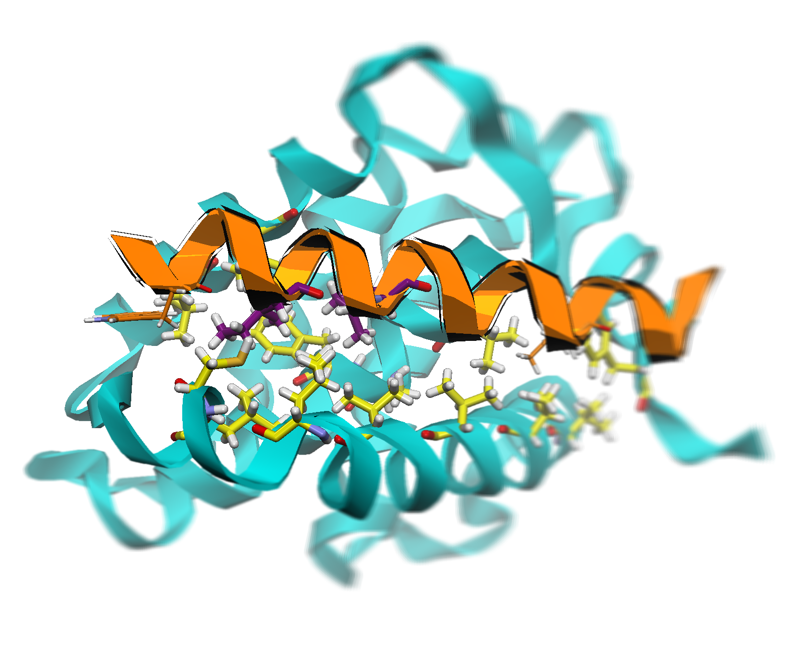

Example Slides Using Kjera for Interactive slides
Example Name
Date / Time
Affiliation
Affiliation2
Overall slide arrangement
Fig: The example image is 50% of its parent box's width. Figure caption uses the class content_subtitle
This is the box for potential references (class: reference_style)
Source modules and style sheets
Image insertion

Fig: Image from JSdelivr with a constrained width (60% of its parent box). Applied an extra filter: grayscale(100%); The width of caption is explicitly set to 60% for width alignment; Added class onhover-top effect.

Fig: Image from commercial CDN with a constrained height (90% of its parent box). Applied an extra filter: contrast(15%); The width of caption is by default inherited from its parent box without explicit width alignment.
// When displaying the slide, fetch and setup the image
const github_api_url = "https://api.github.com/repos/miemiemmmm/Kjera/contents/";
kjera.set_repo(github_api_url);
kjera.setupImage("fetch_img_1", "Example_Image1.png");
// This example used filepath in Github repo, also supports base64 (as in Fig 2) or URL of the image
Fig 1: Asynchronous fetch from Github; The id of the image is "fetch_img_1" and filepath of the image is "Example_Image1.png"; Applied class: image-gray for the on-hover-removal of the gray-scale filter.
// Already setup repo's url as in Fig 1 demo.
const FIGURES = {};
kjera.getAllImages(FIGURES).then(function(ret){
// Figures are by queried, named, and put to the FIGURES object
// Do something with the images in FIGURES
});
Fig 2: After quering all of images in the repository, swtich to the next image every 0.8 seconds.
Inline \(\LaTeX\) functions
View 3D objects via Three.js
<div id="model_1" style="height: 90% !important; width: 90% !important"></div>
View 3D molecules via 3DMol.js
var thecanvas = document.getElementById("3dmol_viewer").querySelector("canvas");
if (thecanvas){ thecanvas.remove(); }
kjera.set_bgcolor("#F85F73") // change the background color
kjera.add3DMolObject("3dmol_viewer", "https://miemiemmmm.b-cdn.net/Kjera/protein.pdb").then(ret=>{
Do something with the viewer
})
Example structure
Other applets
Fig: On-hover zoom and gray-scale filter